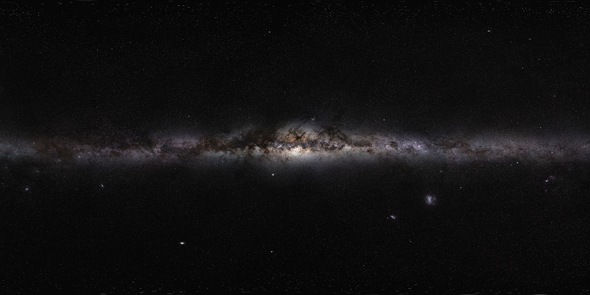

!DOCTYPE html>
<html lang="en">
<head>
    <meta charset="UTF-8">
    <meta name="viewport" content="width=device-width, initial-scale=1.0">
    <title>Excelento!</title>
    <script src="https://aframe.io/releases/1.0.4/aframe.min.js"></script>
    <script src="https://cdn.jsdelivr.net/gh/donmccurdy/aframe-extras@v6.1.0/dist/aframe-extras.min.js"></script>
    <!-- <script src="//cdn.rawgit.com/donmccurdy/aframe-physics-system/v4.0.1/dist/aframe-physics-system.min.js"></script> -->
</head>
<body>
    <a-scene id="scene">
        <a-assets>
            
            
            
            
            
            
            <audio id="apuntele"            src="audio/apuntelebien.mp3"></audio>
            <audio id="freeze"              src="audio/freeze.mp3"      ></audio>
            <audio id="relaz"               src="audio/relaxation.mp3"  ></audio>
            <audio id="ting"                src="audio/ting.mp3"        ></audio>
            
        </a-assets>


        <!-- player -->
        <a-entity id="player" movement-controls kinematic-body>
          <a-entity id="view" 
                    camera
                    position="0 1.7 0"
                    look-controls="pointerLockEnabled: true">
                    <a-text id="mensaje" 
                                value="Vence la entropia del universo jugando tetris!!" 
                                position="-2 1.4 -2" 
                                color="white" 
                                >
                    </a-text> 
                    <a-entity id='pointer' 
                        cursor="fuse: true; fuseTimeout: 500"
                        position="0 0 -1"
                        rotation="0 0 0"
                        geometry="primitive: ring; radiusInner: 0.01; radiusOuter: 0.02"
                        material="color: white; shader: flat">  
                    </a-entity>
          </a-entity>
        </a-entity>
        <a-entity   id="wall" 
                    position="0 0 -10"
        ></a-entity>
        <a-plane id="theplane" 
                src="#cosmos1" 
                position="0 9.5 -10.5" 
                width="11" 
                height="20" 
                onclick="moveTo=0;"
        ></a-plane>
        <a-box  src="#cosmos4"
                id="goback" 
                onclick="doAgain();" 
                position="-500 500 -500" 
                rotation="0 0 0" 
                animation="property: rotation; to: 0 360 0; loop: true; dur: 4000"
        ></a-box>
        <a-sky id="skai" src="#space_sky" ></a-sky>

        <script>
            map=[
            [0,0,0,0,0,0,0,0,0,0],
            [0,0,0,0,0,0,0,0,0,0],
            [0,0,0,0,0,0,0,0,0,0],
            [0,0,0,0,0,0,0,0,0,0],
            [0,0,0,0,0,0,0,0,0,0],
            [0,0,0,0,0,0,0,0,0,0],
            [0,0,0,0,0,0,0,0,0,0],
            [0,0,0,0,0,0,0,0,0,0],
            [0,0,0,0,0,0,0,0,0,0],
            [0,0,0,0,0,0,0,0,0,0],
            [0,0,0,0,0,0,0,0,0,0],
            [0,0,0,0,0,0,0,0,0,0],
            [0,0,0,0,0,0,0,0,0,0],
            [0,0,0,0,0,0,0,0,0,0],
            [0,0,0,0,0,0,0,0,0,0],
            [0,0,0,0,0,0,0,0,0,0],
            [0,0,0,0,0,0,0,0,0,0],
            [0,0,0,0,0,0,0,0,0,0],
            [0,0,0,0,0,0,0,0,0,0],
            [0,0,0,0,0,0,0,0,0,0],
            [0,0,0,0,0,0,0,0,0,0]]
            var fig_axis={ //Objeto para guardar coordenadas de la figura
                y_1: 0,
                y_2: 0,
                y_3: 0,
                y_4: 0,
                x_1: 0,
                x_2: 0,
                x_3: 0,
                x_4: 0
            }
            var moveTo=0; //Para saber la direccion(izq-derech)
            var degree=0; //Para saber cuanto girar la pieza(90-180-270)
            var fig="";   //Para saber cual figura estamos usando
            var cont=0;   //Para tener tiempo de mover la fig a los lados
            var y=17;     //Posicion inicial de la fig
            var x=0;      //no recuerdo si lo estoy usando xd
            var Xmax=-10; //Para conocer el limite de la fig a la derecha
            var Xmin=-10; //Para conocer el limite de la fig a la izquierda
            var points=0; //Puntuacion
            var time=500; //lo inicializamos en 500 pero en realidad se va a modificar

            var check_axis=()=>{
                fig_axis.y_1=document.querySelector(`#${fig}1`).getAttribute("position").y
                fig_axis.y_2=document.querySelector(`#${fig}2`).getAttribute("position").y
                fig_axis.y_3=document.querySelector(`#${fig}3`).getAttribute("position").y
                fig_axis.y_4=document.querySelector(`#${fig}4`).getAttribute("position").y
                fig_axis.x_1=document.querySelector(`#${fig}1`).getAttribute("position").x
                fig_axis.x_2=document.querySelector(`#${fig}2`).getAttribute("position").x
                fig_axis.x_3=document.querySelector(`#${fig}3`).getAttribute("position").x
                fig_axis.x_4=document.querySelector(`#${fig}4`).getAttribute("position").x
            }
            var check_X=()=>{//Obtenemos Xmax y Xmin de la fig
                for(let j=1;j<=4;j++){
                    let a = document.querySelector(`#${fig}${j}`).getAttribute("position").x
                    if(Xmax<a){
                        Xmax=a;
                    }
                    if(Xmin>a){
                        Xmin=a;
                    }
                }
            }
            var check_Y=()=>{//obtenemos el menor valor de "y" en la fig
                y = document.querySelector(`#${fig}1`).getAttribute("position").y
                for(let i=1;i<4;i++){
                    let a = document.querySelector(`#${fig}${i+1}`).getAttribute("position").y
                    if(y>a){
                        y=a;
                    }
                }
            }
            var create_wall=(position,side)=>{ //creando las paredes
                let setFigure=document.querySelector("#wall")
                let theFigure=document.createElement("a-box")
                theFigure.setAttribute("width",'1')
                theFigure.setAttribute("depth",'1')
                theFigure.setAttribute("height",'20')
                theFigure.setAttribute("src", "#cosmos1")
                theFigure.setAttribute("id",side)
                theFigure.setAttribute("position",position)
                setFigure.appendChild(theFigure)
            } 
            var create_map=()=>{
                create_wall('5 9.5 0','right')
                create_wall('-6 9.5 0','left')
                doSound("#skai","#relaz")
            }         
            var create_box=(id,position,src,touchable=true)=>{ //creando el cubo
                let setFigure=document.querySelector("#scene")
                let theFigure=document.createElement("a-box")
                theFigure.setAttribute("width",'1')
                theFigure.setAttribute("depth",'1')
                theFigure.setAttribute("height",'1')
                theFigure.setAttribute("src", src)
                theFigure.setAttribute("position",position)
                if(touchable){
                    theFigure.setAttribute("id",id)
                    theFigure.setAttribute("onclick","turn_figure(fig);")
                }else{
                    theFigure.setAttribute("class",id)
                }
                setFigure.appendChild(theFigure)

            }
            var create_figure=(figure)=>{ //cambiar colores a las figuras
                fig=figure;
                switch(figure) {
                    case "I":
                        create_box('I1','0 17 -10','#cosmos2')
                        create_box('I2','0 18 -10','#cosmos2')
                        create_box('I3','0 19 -10','#cosmos2')
                        create_box('I4','0 20 -10','#cosmos2')
                        break;
                    case "L":
                        create_box('L1','1 17 -10','#cosmos2')
                        create_box('L2','0 17 -10','#cosmos2')
                        create_box('L3','0 18 -10','#cosmos2')
                        create_box('L4','0 19 -10','#cosmos2')
                        break;
                    case "T":
                        create_box('T1','0 17 -10','#cosmos2')
                        create_box('T2','0 18 -10','#cosmos2')
                        create_box('T3','1 18 -10','#cosmos2')
                        create_box('T4','-1 18 -10','#cosmos2')
                        break;
                    case "S":
                        create_box('S1','0 17 -10','#cosmos2')
                        create_box('S2','0 18 -10','#cosmos2')
                        create_box('S3','1 18 -10','#cosmos2')
                        create_box('S4','1 19 -10','#cosmos2')
                        break;
                    case "Li":
                        create_box('Li1','-1 17 -10','#cosmos2')
                        create_box('Li2','0 17 -10','#cosmos2')
                        create_box('Li3','0 18 -10','#cosmos2')
                        create_box('Li4','0 19 -10','#cosmos2')
                        break;
                    case "Si":
                        create_box('Si1','1 17 -10','#cosmos2')
                        create_box('Si2','1 18 -10','#cosmos2')
                        create_box('Si3','0 18 -10','#cosmos2')
                        create_box('Si4','0 19 -10','#cosmos2')
                        break;
                    default:
                        create_box('O1','0 17 -10','#cosmos2')
                        create_box('O2','0 18 -10','#cosmos2')
                        create_box('O3','-1 18 -10','#cosmos2')
                        create_box('O4','-1 17 -10','#cosmos2')
                  }
            }
            var select_figure=()=>{
                let num = Math.round(Math.random()*7)
                Xmax=-10;
                Xmin=10;
                degree=0;
                switch(num){
                    case 1:
                        create_figure("L")
                        break;
                    case 2:
                        create_figure("Li")
                        break;
                    case 3:
                        create_figure("O")
                        break;
                    case 4:
                        create_figure("T")
                        break;
                    case 5:
                        create_figure("S")
                        break;
                    case 6:
                        create_figure("Si")
                        break;
                    default:
                        create_figure("I")
                        break;
                }
            }
            var delete_figure=()=>{
                document.querySelector(`#${fig}1`).remove();
                document.querySelector(`#${fig}2`).remove();
                document.querySelector(`#${fig}3`).remove();
                document.querySelector(`#${fig}4`).remove();
            }
            var check_limit=(figure)=>{
                check_X();
                check_axis();
                console.log("hello")  
                if(Xmax>4){
                    let rest=Xmax-4;
                    console.log(`la Resta es ${rest}`)
                    document.querySelector(`#${figure}1`).setAttribute("position",`${fig_axis.x_1-rest} ${fig_axis.y_1} -10`)
                    document.querySelector(`#${figure}2`).setAttribute("position",`${fig_axis.x_2-rest} ${fig_axis.y_2} -10`)
                    document.querySelector(`#${figure}3`).setAttribute("position",`${fig_axis.x_3-rest} ${fig_axis.y_3} -10`)
                    document.querySelector(`#${figure}4`).setAttribute("position",`${fig_axis.x_4-rest} ${fig_axis.y_4} -10`)
                    Xmax=4;
                    }
                  if(Xmin<-5){
                    let rest=Math.abs(Xmin+5);
                    document.querySelector(`#${figure}1`).setAttribute("position",`${fig_axis.x_1+rest} ${fig_axis.y_1} -10`)
                    document.querySelector(`#${figure}2`).setAttribute("position",`${fig_axis.x_2+rest} ${fig_axis.y_2} -10`)
                    document.querySelector(`#${figure}3`).setAttribute("position",`${fig_axis.x_3+rest} ${fig_axis.y_3} -10`)
                    document.querySelector(`#${figure}4`).setAttribute("position",`${fig_axis.x_4+rest} ${fig_axis.y_4} -10`)
                    Xmin=-5;
                    }
            }
            var turn_figure=(figure)=>{
                degree+=90;   
                if(degree==360){
                    degree=0
                }
                //console.log("girandoxd")
                //console.log(degree)
                var xi=document.querySelector(`#${fig}1`).getAttribute("position").x
                var yi=document.querySelector(`#${fig}1`).getAttribute("position").y
                switch(figure) {
                    case "I":
                        if(degree==90||degree==270){
                            document.querySelector(`#${figure}1`).setAttribute("position",`${xi-1} ${yi} -10`)
                            document.querySelector(`#${figure}2`).setAttribute("position",`${xi} ${yi} -10`)
                            document.querySelector(`#${figure}3`).setAttribute("position",`${xi+1} ${yi} -10`)
                            document.querySelector(`#${figure}4`).setAttribute("position",`${xi+2} ${yi} -10`)
                        }
                        if(degree==180||degree==0){
                            document.querySelector(`#${figure}1`).setAttribute("position",`${xi+1} ${yi} -10`)
                            document.querySelector(`#${figure}2`).setAttribute("position",`${xi+1} ${yi+1} -10`)
                            document.querySelector(`#${figure}3`).setAttribute("position",`${xi+1} ${yi+2} -10`)
                            document.querySelector(`#${figure}4`).setAttribute("position",`${xi+1} ${yi+3} -10`)
                        }
                        break;
                    case "L":
                        if(degree==90){
                            document.querySelector(`#${figure}1`).setAttribute("position",`${xi-1} ${yi} -10`)
                            document.querySelector(`#${figure}2`).setAttribute("position",`${xi-1} ${yi+1} -10`)
                            document.querySelector(`#${figure}3`).setAttribute("position",`${xi} ${yi+1} -10`)
                            document.querySelector(`#${figure}4`).setAttribute("position",`${xi+1} ${yi+1} -10`)
                        }
                        if(degree==180){
                            document.querySelector(`#${figure}1`).setAttribute("position",`${xi} ${yi+2} -10`)
                            document.querySelector(`#${figure}2`).setAttribute("position",`${xi+1} ${yi+2} -10`)
                            document.querySelector(`#${figure}3`).setAttribute("position",`${xi+1} ${yi+1} -10`)
                            document.querySelector(`#${figure}4`).setAttribute("position",`${xi+1} ${yi} -10`)
                        }
                        if(degree==270){
                            document.querySelector(`#${figure}1`).setAttribute("position",`${xi+1} ${yi-1} -10`)
                            document.querySelector(`#${figure}2`).setAttribute("position",`${xi+1} ${yi-2} -10`)
                            document.querySelector(`#${figure}3`).setAttribute("position",`${xi} ${yi-2} -10`)
                            document.querySelector(`#${figure}4`).setAttribute("position",`${xi-1} ${yi-2} -10`)
                        }
                        if(degree==0){
                            document.querySelector(`#${figure}1`).setAttribute("position",`${xi} ${yi-1} -10`)
                            document.querySelector(`#${figure}2`).setAttribute("position",`${xi-1} ${yi-1} -10`)
                            document.querySelector(`#${figure}3`).setAttribute("position",`${xi-1} ${yi} -10`)
                            document.querySelector(`#${figure}4`).setAttribute("position",`${xi-1} ${yi+1} -10`)
                        }
                        break;
                    case "T":
                        if(degree==90){
                            document.querySelector(`#${figure}1`).setAttribute("position",`${xi-1} ${yi+1} -10`)
                            document.querySelector(`#${figure}2`).setAttribute("position",`${xi} ${yi+1} -10`)
                            document.querySelector(`#${figure}3`).setAttribute("position",`${xi} ${yi} -10`)
                            document.querySelector(`#${figure}4`).setAttribute("position",`${xi} ${yi+2} -10`)
                        }
                        if(degree==180){
                            document.querySelector(`#${figure}1`).setAttribute("position",`${xi+1} ${yi} -10`)
                            document.querySelector(`#${figure}2`).setAttribute("position",`${xi+1} ${yi-1} -10`)
                            document.querySelector(`#${figure}3`).setAttribute("position",`${xi} ${yi-1} -10`)
                            document.querySelector(`#${figure}4`).setAttribute("position",`${xi+2} ${yi-1} -10`)
                        }
                        if(degree==270){
                            document.querySelector(`#${figure}1`).setAttribute("position",`${xi+1} ${yi} -10`)
                            document.querySelector(`#${figure}2`).setAttribute("position",`${xi} ${yi} -10`)
                            document.querySelector(`#${figure}3`).setAttribute("position",`${xi} ${yi-1} -10`)
                            document.querySelector(`#${figure}4`).setAttribute("position",`${xi} ${yi+1} -10`)
                        }
                        if(degree==0){
                            document.querySelector(`#${figure}1`).setAttribute("position",`${xi-1} ${yi-1} -10`)
                            document.querySelector(`#${figure}2`).setAttribute("position",`${xi-1} ${yi} -10`)
                            document.querySelector(`#${figure}3`).setAttribute("position",`${xi} ${yi} -10`)
                            document.querySelector(`#${figure}4`).setAttribute("position",`${xi-2} ${yi} -10`)
                        }
                        break;
                    case "S":
                        if(degree==90||degree==270){
                            document.querySelector(`#${figure}1`).setAttribute("position",`${xi} ${yi+1} -10`)
                            document.querySelector(`#${figure}2`).setAttribute("position",`${xi+1} ${yi+1} -10`)
                            document.querySelector(`#${figure}3`).setAttribute("position",`${xi+1} ${yi} -10`)
                            document.querySelector(`#${figure}4`).setAttribute("position",`${xi+2} ${yi} -10`)
                        }
                        if(degree==180||degree==0){
                            document.querySelector(`#${figure}1`).setAttribute("position",`${xi} ${yi-1} -10`)
                            document.querySelector(`#${figure}2`).setAttribute("position",`${xi} ${yi} -10`)
                            document.querySelector(`#${figure}3`).setAttribute("position",`${xi+1} ${yi} -10`)
                            document.querySelector(`#${figure}4`).setAttribute("position",`${xi+1} ${yi+1} -10`)
                        }
                        break;
                    case "Li":
                        if(degree==90){
                            document.querySelector(`#${figure}1`).setAttribute("position",`${xi} ${yi+1} -10`)
                            document.querySelector(`#${figure}2`).setAttribute("position",`${xi} ${yi} -10`)
                            document.querySelector(`#${figure}3`).setAttribute("position",`${xi+1} ${yi} -10`)
                            document.querySelector(`#${figure}4`).setAttribute("position",`${xi+2} ${yi} -10`)
                        }
                        if(degree==180){
                            document.querySelector(`#${figure}1`).setAttribute("position",`${xi+2} ${yi+1} -10`)
                            document.querySelector(`#${figure}2`).setAttribute("position",`${xi+1} ${yi+1} -10`)
                            document.querySelector(`#${figure}3`).setAttribute("position",`${xi+1} ${yi} -10`)
                            document.querySelector(`#${figure}4`).setAttribute("position",`${xi+1} ${yi-1} -10`)
                        }
                        if(degree==270){
                            document.querySelector(`#${figure}1`).setAttribute("position",`${xi} ${yi-2} -10`)
                            document.querySelector(`#${figure}2`).setAttribute("position",`${xi} ${yi-1} -10`)
                            document.querySelector(`#${figure}3`).setAttribute("position",`${xi-1} ${yi-1} -10`)
                            document.querySelector(`#${figure}4`).setAttribute("position",`${xi-2} ${yi-1} -10`)
                        }
                        if(degree==0){
                            document.querySelector(`#${figure}1`).setAttribute("position",`${xi-2} ${yi} -10`)
                            document.querySelector(`#${figure}2`).setAttribute("position",`${xi-1} ${yi} -10`)
                            document.querySelector(`#${figure}3`).setAttribute("position",`${xi-1} ${yi+1} -10`)
                            document.querySelector(`#${figure}4`).setAttribute("position",`${xi-1} ${yi+2} -10`)
                        }
                        break;
                    case "Si":
                        if(degree==90||degree==270){
                            document.querySelector(`#${figure}1`).setAttribute("position",`${xi-1} ${yi} -10`)
                            document.querySelector(`#${figure}2`).setAttribute("position",`${xi} ${yi} -10`)
                            document.querySelector(`#${figure}3`).setAttribute("position",`${xi} ${yi+1} -10`)
                            document.querySelector(`#${figure}4`).setAttribute("position",`${xi+1} ${yi+1} -10`)
                        }
                        if(degree==180||degree==0){
                            document.querySelector(`#${figure}1`).setAttribute("position",`${xi+1} ${yi} -10`)
                            document.querySelector(`#${figure}2`).setAttribute("position",`${xi+1} ${yi+1} -10`)
                            document.querySelector(`#${figure}3`).setAttribute("position",`${xi} ${yi+1} -10`)
                            document.querySelector(`#${figure}4`).setAttribute("position",`${xi} ${yi+2} -10`)
                        }
                        break;
                    default:
                        break;
                  }
                  check_limit(figure);
            }
            var put_figure=()=>{
                
                check_axis();
                create_box(`fila_${fig_axis.y_1}`,`${fig_axis.x_1} ${fig_axis.y_1} -10`,"#cosmos3", false)
                create_box(`fila_${fig_axis.y_2}`,`${fig_axis.x_2} ${fig_axis.y_2} -10`,"#cosmos3", false)
                create_box(`fila_${fig_axis.y_3}`,`${fig_axis.x_3} ${fig_axis.y_3} -10`,"#cosmos3", false)
                create_box(`fila_${fig_axis.y_4}`,`${fig_axis.x_4} ${fig_axis.y_4} -10`,"#cosmos3", false)
                doSound("#theplane","#freeze")
                //para el arreglo
                map[fig_axis.y_1][fig_axis.x_1+5]=1
                map[fig_axis.y_2][fig_axis.x_2+5]=1
                map[fig_axis.y_3][fig_axis.x_3+5]=1
                map[fig_axis.y_4][fig_axis.x_4+5]=1
                //console.log(`los x ${x_1}, ${x_2}, ${x_3}, ${x_4}`)

            }
            var check_next=()=>{
                check_axis();
                if(y>0){
                    switch(1){
                        case map[fig_axis.y_1 -1][fig_axis.x_1 +5]:
                            return false;
                            break;
                        case map[fig_axis.y_2 -1][fig_axis.x_2 +5]:
                            return false;
                            break;
                        case map[fig_axis.y_3 -1][fig_axis.x_3 +5]:
                            return false;
                            break;
                        case map[fig_axis.y_4 -1][fig_axis.x_4 +5]:
                            return false;
                        break;
                        default:
                            return true
                    }
                }
                
            }
            var delete_row=(numb)=>{
                let fila = Array.from(document.querySelectorAll(`.fila_${numb}`))
                fila.forEach(elmt=>{ elmt.remove()})
                for(var i=0;i<=10;i++){
                    map[numb][i]=0
                }
            }
            var move_all=(numb)=>{
                let fila = Array.from(document.querySelectorAll(`.fila_${numb+1}`))
                fila.forEach(elmt=>{
                    elmt.setAttribute("class",`fila_${numb}`)
                    let x_m=elmt.getAttribute("position").x
                    let y_m=elmt.getAttribute("position").y
                    map[y_m][x_m+5]=0
                    map[y_m-1][x_m+5]=1
                    elmt.setAttribute("position",`${x_m} ${y_m-1} -10`)
                })
            }
            var check_row=(numb)=>{
                let fila = Array.from(document.querySelectorAll(`.fila_${numb}`))
                if(fila.length==10){
                    points+=100;
                    doSound("#wall","#ting")
                    if(points<1000){
                        document.querySelector('#mensaje').setAttribute("value",`Excelente! tienes ${points} puntos`)
                    }
                    else{
                        document.querySelector('#mensaje').setAttribute("value",`No lo puedo creer! tienes ${points} puntos, que genial eres!`)
                    }
                    delete_row(numb);
                    for(let i=numb;i<=20;i++){
                        move_all(i);
                    }
                    
                }
            }
            var check_game=()=>{
                if(document.querySelectorAll(`.fila_19`).length>0){
                    console.log("peditessss")
                    return false;
                }else{
                    return true;
                }

            }
            var check_left=()=>{
                if(Xmin>-5){
                    check_axis();
                    //if(fig_axis.x_1+5>0&&fig_axis.x_2+5>0&&fig_axis.x_3+5>0&&fig_axis.x_4+5>0){}
                    if(map[fig_axis.y_1][fig_axis.x_1+4]==0&&map[fig_axis.y_2][fig_axis.x_2+4]==0&&map[fig_axis.y_3][fig_axis.x_3+4]==0&&map[fig_axis.y_4][fig_axis.x_4+4]==0){
                        return true;
                    }else{
                        return false;
                    }
                }else{
                    return false;
                }

            }
            var check_right=()=>{
                if(Xmax<5){
                    check_axis();
                    //if(fig_axis.x_1+5>0&&fig_axis.x_2+5>0&&fig_axis.x_3+5>0&&fig_axis.x_4+5>0){}
                    if(map[fig_axis.y_1][fig_axis.x_1+6]==0&&map[fig_axis.y_2][fig_axis.x_2+6]==0&&map[fig_axis.y_3][fig_axis.x_3+6]==0&&map[fig_axis.y_4][fig_axis.x_4+6]==0){
                        return true;
                    }else{
                        return false;
                    }
                }else{
                    return false;
                }
            }
            var doSound=(id,sound)=>{
                let elmt = document.querySelector(id)
                if(elmt.getAttribute("sound")){
                    elmt.removeAttribute("sound")
                    elmt.setAttribute("sound",`autoplay: true; src: ${sound}`)
                }else{
                    elmt.setAttribute("sound",`autoplay: true; src: ${sound}`)
                }
            }
            var doAgain=()=>{
                if(cont==7){
                    for(let i=0;i<=20;i++){
                        delete_row(i)
                    }
                    document.querySelector("#goback").setAttribute("position",'500 500 -500');
                    document.querySelector('#mensaje').setAttribute("value",'Excelente! Vamos de nuevo a intentarlo :3')
                    doSound("#skai","#relaz")
                }
            }
            create_map();
            select_figure();
            document.getElementById("left").addEventListener("click",()=>{moveTo=-1});
            document.getElementById("right").addEventListener("click",()=>{moveTo=1});
            
            setInterval(()=>{
                if(check_game()){
                    //nos aseguramos de tener el valor mas cercano a 0 en la figura
                    check_Y();
                    //nos aseguramos de que la figura no va a atravezar de las paredes
                    check_X();
                    //revisamos las filas llenas para eliminarlas
                    for(let i=0;i<=20;i++){
                        check_row(i);
                    }
                    //mientras la figura no llegue al 0 sigue bajando
                    //revisamos si podemos mover la figura
                    if(check_next()){ //si detecta otra figura en ese lugar se detiene
                        let right=check_right(); //nos aseguramos de poder movernos a la derecha
                        let left=check_left(); //nos aseguramos de poder movernos a la izquierda
                        cont+=1; //para que sea mayor que 1 y la figura pueda bajar
                        check_limit(fig); //por si la figura sale de los limites(las paredes)
                        for(let i=1;i<=4;i++){
                            var y0= document.querySelector(`#${fig}${i}`).getAttribute("position").y
                            var x0= document.querySelector(`#${fig}${i}`).getAttribute("position").x
                            //comprobamos si hay que mover la figura a la derecha o izquierda
                            switch(moveTo){
                                case 1:
                                    if(right){
                                        x0+=1;
                                        console.log(`derecha  ${check_right()}`);
                                    }
                                    break;
                                case -1:
                                    if(left){
                                        x0-=1;
                                        console.log(`izquierda ${check_left()}`);
                                    }
                                    break;
                                default:
                                    x0=x0;
                            }
                            if(cont>1){
                                document.querySelector(`#${fig}${i}`).setAttribute('position',`${x0} ${y0-1} -10`)
                            }else{
                                document.querySelector(`#${fig}${i}`).setAttribute('position',`${x0} ${y0} -10`)
                            }
                        }
                        if(cont>1){cont=0;}
                    }
                    else{
                        put_figure();
                        delete_figure();
                        select_figure();
                        y=20
                    }
                }
                else{
                    //cuando se acaba el juego desplega el mensaje
                    document.querySelector('#mensaje').setAttribute("value",'Oh, nadie le gana al universo..pero vuelve a intentarlo! :D')
                    if(cont<=5){
                        doSound("#player","#apuntele")
                        document.querySelector("#goback").setAttribute("position",'3 0.6 -3');
                        cont=7;
                    }
                }
                //a medida que ganas puntos el juego se vuelve mas rapido
                time=(1000-(points/50))/2
            },time)
            
        </script>

    </a-scene>
</body>
</html>